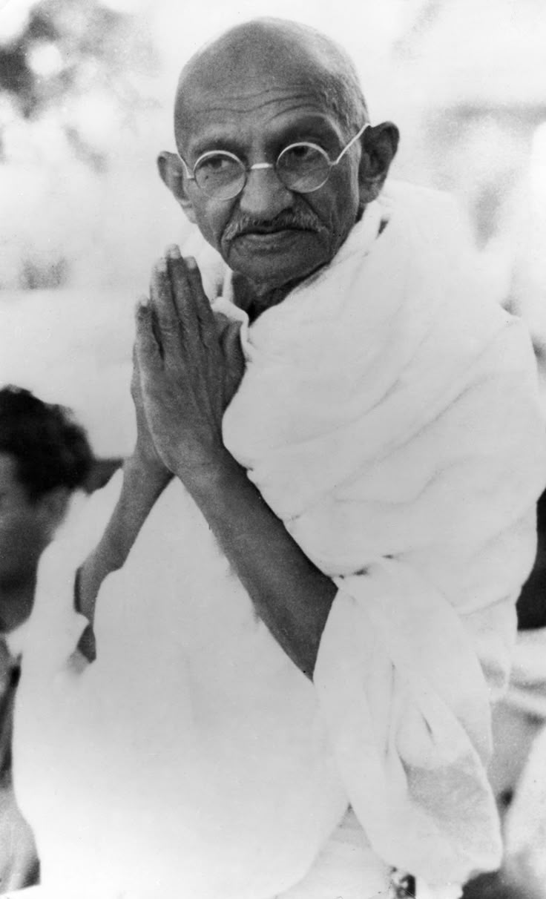

Sumber- Mahatma Gandhi (1869–1948) Mahatma Gandhi adalah pemimpin spiritual dan politik India yang dikenal sebagai tokoh utama dalam perjuangan kemerdekaan India dari penjajahan Inggris. Ia mengembangkan konsep "Satyagraha", yaitu perlawanan tanpa kekerasan (nonviolence resistance), yang menginspirasi banyak gerakan hak sipil di seluruh dunia.
Nama lengkap: Mohandas Karamchand Gandhi
Lahir: 2 Oktober 1869 di Porbandar, India
Orang tua:
Ayah: Karamchand Gandhi (pejabat pemerintah)
Ibu: Putlibai (wanita religius yang taat)
Pendidikan: Belajar hukum di University College London, Inggris, Kembali ke India sebagai pengacara tetapi kesulitan membangun karier
1. Gerakan Non-Kerjasama (1920–1922)
Menyerukan boikot terhadap barang-barang Inggris Mendorong rakyat India untuk berhenti bekerja di pemerintahan kolonial
2. Salt March / Dandi March (1930) Memimpin aksi protes sepanjang 385 km melawan pajak garam Inggris Ribuan orang bergabung dalam gerakan ini
3. Kampanye "Quit India" (1942) Menuntut Inggris segera meninggalkan India Ditangkap dan dipenjara oleh pemerintah kolonial
Pindah ke Afrika Selatan untuk bekerja sebagai pengacara Mengalami diskriminasi rasial, termasuk dikeluarkan dari kereta api meskipun memiliki tiket kelas satu Memimpin perjuangan melawan diskriminasi terhadap komunitas India di Afrika Selatan Mengembangkan konsep Satyagraha (perlawanan tanpa kekerasan)
India akhirnya merdeka pada 15 Agustus 1947 Gandhi sedih karena India terpecah menjadi India dan Pakistan, yang menyebabkan konflik berdarah antara Hindu dan Muslim Ia berusaha menghentikan kekerasan dengan melakukan mogok makan
Dibunuh: 30 Januari 1948 oleh Nathuram Godse, seorang nasionalis Hindu yang marah atas toleransi Gandhi terhadap Muslim Dikenang sebagai simbol perdamaian, toleransi, dan perjuangan tanpa kekerasan Menginspirasi banyak pemimpin dunia, seperti Martin Luther King Jr. dan Nelson Mandela Gandhi membuktikan bahwa perubahan bisa terjadi tanpa kekerasan, menjadikannya salah satu tokoh paling berpengaruh di dunia.